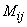
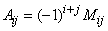
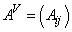
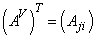
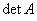
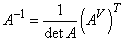

1.3.3.3 Алгоритм нахождения обратной матрицы с помощью
присоединенной матрицы
- Находим
 , проверяем
, проверяем  .
. - Находим  - все миноры
матрицы
 .
. - Определяем .
- Строим матрицу алгебраических дополнений  и транспонируем: .
- Делим каждый элемент матрицы на :  Формула нахождения обратной матрицы к данной .